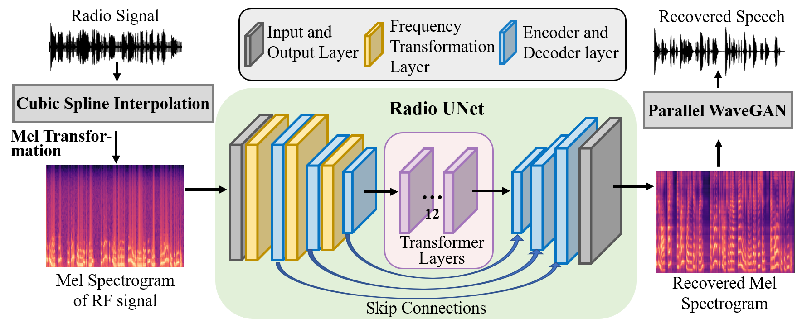

Radio2Speech: High Quality Speech Recovery from Radio Frequency Signal
Running Zhao1,3 Jiangtao Yu2,3Tingle Li2,3 Hang Zhao2,3Edith C.H. Ngai1 1The University of Hong Kong 2IIIS, Tsinghua University 3Shanghai Qi Zhi Institute

In this webpage, we show some reference speeches and recovered speeches of our proposed Radio2Speech and WaveEar[1]. Radio2Speech can recover comparable speech to the microphone, rather than just single tone music or incomprehensible speech like existing approaches. Quantitative and qualitative evaluations show that in quiet, noisy and soundproof scenarios, Radio2Speech achieves state-of-the-art performance and is on par with microphone that works in quiet scenario.
Video
Speech Recovery Samples
(1) Quiet Scenario:
Groud Truth (8KHz)
Mcirophone
WaveEar[1]
Radio2Speech (Ours)
(2) Noisy Scenario
Groud Truth (8KHz)
Mcirophone
WaveEar[1]
Radio2Speech (Ours)
(3) Soundproof Scenario
Groud Truth (8KHz)
Mcirophone
WaveEar[1]
Radio2Speech (Ours)
Reference
[1] Chenhan Xu, Zhengxiong Li, Hanbin Zhang, Aditya Singh Rathore, Huining Li, Chen Song, Kun Wang, and Wenyao Xu. 2019. WaveEar: Exploring a mmWave-based Noise-resistant Speech Sensing for Voice-User Interface. In Proceedings of the 17th Annual International Conference on Mobile Systems, Applications, and Services (MobiSys),2019,pp. 14–26.